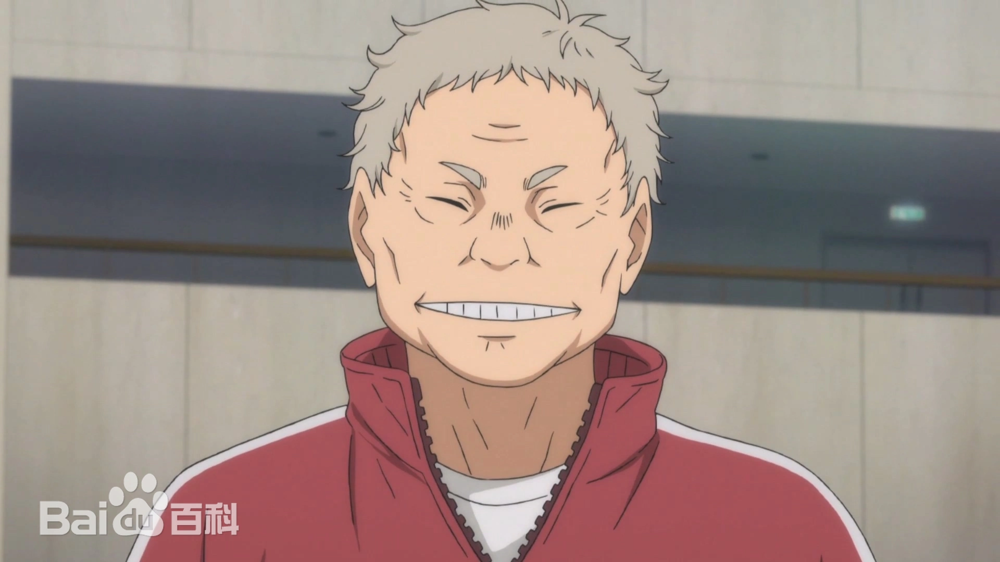
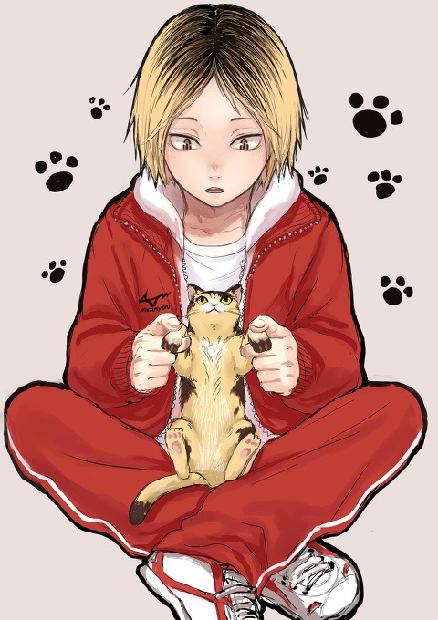
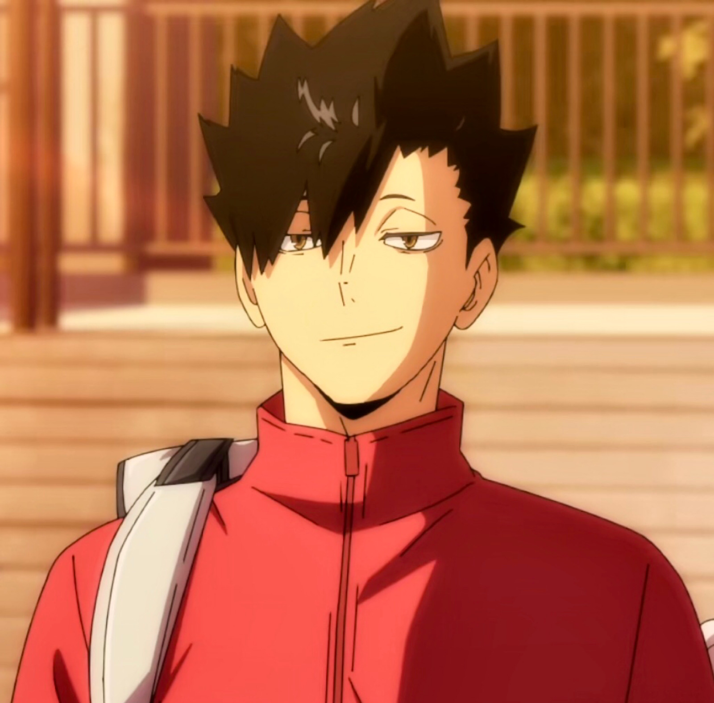
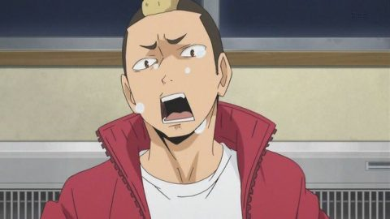
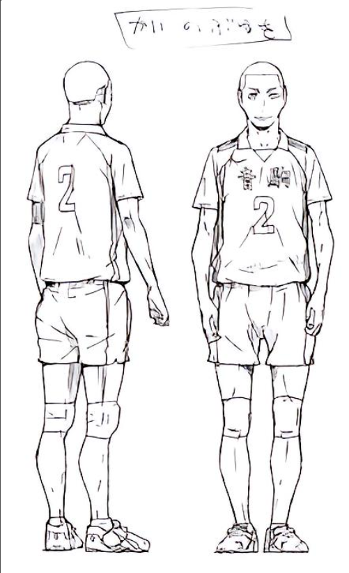
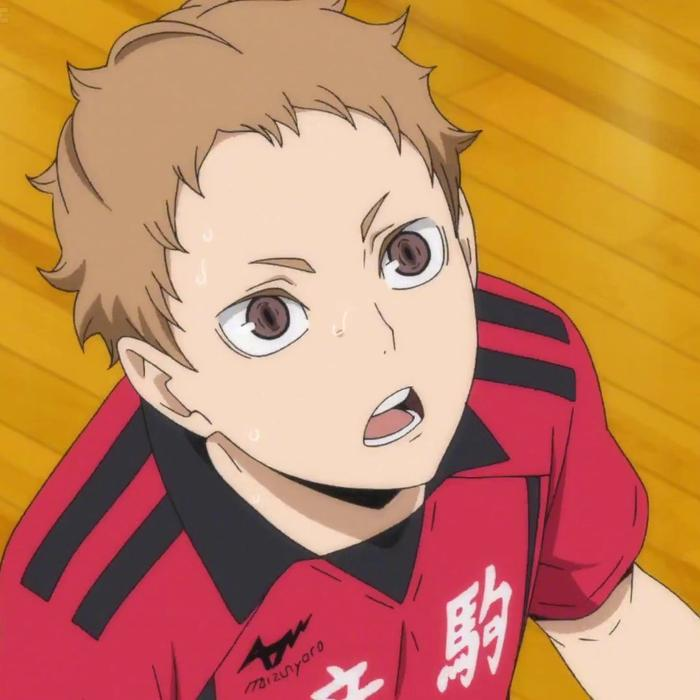
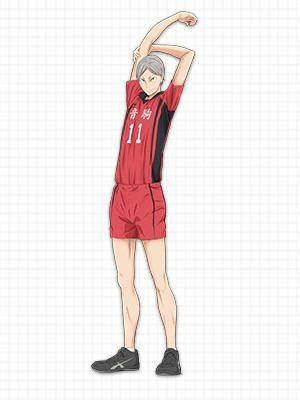

人物背景
音驹高中
音驹高校是日本动漫《排球少年！！》中的一所主要学校。
位于东京都的传统强校，有“猫”之称，是乌野高校渊源已久的对手，同为“没落的强豪”。
没有特别突出的攻击力，全队都很擅于接球，在防守方面毫无漏洞。
猫又育史，男，日本漫画《排球！！》及其衍生作品中的角色，是音驹高校的总教练。

孤爪研磨（孤爪 研磨（こづめ けんま）。在街上遇上过日向翔阳而认识，称呼他为“翔阳”。不喜欢上下级关系，没有特别喜欢打排球，但打了也不讨厌，只是不喜欢累的感觉。
不擅长与人相处，也不想与人扯上关系，却很在意他人的眼光，小时候玩伴只有黑尾铁朗。

黑尾铁朗（黒[hēi]尾 鉄[tiě]朗（くろお てつろう）。排球队员是“血液”，永不停滞输送氧气给大脑(二传手)，为了使其正常运作
与孤爪研磨为儿童玩伴。
擅于挑衅别人跟战术配合，也是少数接球很稳地副攻手。
拥有优越的拦网触觉以及在拦网中能够担当司令塔。

山本猛虎（山本 猛虎（やまもと たけとら）。性格与田中龙之介相似，因赌乌野没有美女经理而输掉哈根达斯，爱慕清水洁子，但没有上前搭话的勇气。性格和田中很像，比赛结束后与田中龙之介互称”吾友“。

海信行（海 信行（かい のぶゆき）。最近的烦恼：虽然有琐碎的担心但觉得活着总会有办法。

夜久卫辅（夜久 卫辅（やく もりすけ）。曾因为研磨居然有办法毫不认生的跟日向聊天而感动落泪。
身高话题是禁句。

灰羽列夫（灰羽 リエーフ（はいば りえーふ）。有着灰银色短发，和绿色的瞳孔。个子很高，但因为有驼背的习惯所以一开始往往看不出来。是日本人与俄罗斯人的混血，但因为从小就生长在日本的关系，完全不会讲俄语。列耶夫在俄语中是“狮子”的意思。研磨对他的评价是“从高中才开始打排球，所以发球跟接球都很弱，甚至比日向还烂”。但凭著卓越的身体素质跟身高，在第一局前半就能适应怪人快攻，并且把日向的球给拦下来。虽然本身并不讨人厌，但讲话相当坦率，而且偶而会坦率过头。曾对刚见面的日向说：“离近看感觉日向又更小了呢。”
不喜欢练接球，曾为了逃避接球练习而装死。
